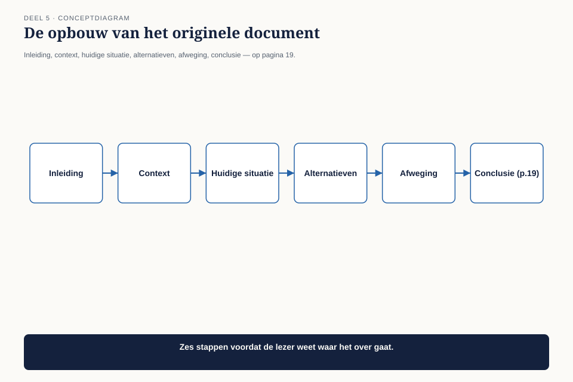
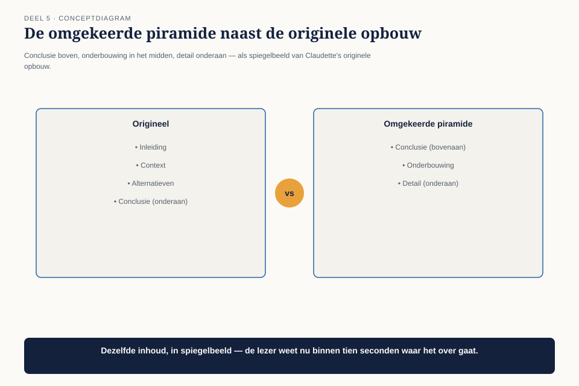

Deel 5 — Human Dynamics II: invloed
Slidedeck · Ductus-cursus BTABoK · Niveau 1 · deel 5 van 30 · 29 slides
Slide 1 — Titel: Human Dynamics II
Deel 5 — invloed
Ductus
Slide 2 — Agenda: Vanmorgen
- De eenentwintig pagina’s
- Schrijven: de omgekeerde piramide
- Presenteren voor wie geen tijd heeft
- Onderhandelen is niet toegeven
- Leiderschap zonder mandaat
- Het document herschreven
Slide 3 — Sectie: 1. De eenentwintig pagina's
Slide 4 — Figuur: De opbouw van het origineel

Slide 5 — Statement: Niet slecht geschreven
Verkeerd geordend
Slide 6 — Bullets: Observatie O5
- Documenten worden niet gelezen
- Mondeling komt het niet aan bij niet-technische luisteraars
- De volgorde van onderzoek ≠ de volgorde van lezen
Slide 7 — Sectie: 2. De omgekeerde piramide
Slide 8 — Figuur: Kop, kern, onderbouwing, bijlage

Slide 9 — Tabel: Vier lagen
| Laag | Wat erin staat |
|---|---|
| Kop | conclusie + gevraagd besluit |
| Kern | drie redenen |
| Onderbouwing | analyse, cijfers |
| Bijlage | volledig onderzoek |
Slide 10 — Statement: Knip de eerste alinea eraf
Staat de conclusie erin?
Slide 11 — Opdracht: Opdracht 2 — Herschrijf je document
30 minuten, individueel
Kop · kern · markeer wat naar de bijlage verhuist
Vergelijk de lengte met het origineel
Slide 12 — Sectie: 3. Presenteren
Slide 13 — Bullets: Drie regels
- Eerste zin is de conclusie, niet de aanleiding
- Eén technisch begrip per keer — alleen als het besluit ervan afhangt
- Afsluiting herhaalt het besluit, geen samenvatting van alles
Slide 14 — Sectie: 4. Onderhandelen is niet toegeven
Slide 15 — Tabel: Twee tegenovergestelde fouten
| Fout 1 | Fout 2 |
|---|---|
| Star vasthouden | Te snel toegeven |
| Voelt integer | Voelt behulpzaam |
| Is eigenlijk: geen onderhandelvaardigheid | Is eigenlijk: functie overbodig maken |
Slide 16 — Statement: Wat is de kern?
Wat is de vorm?
Slide 17 — Bullets: De onderhandelruimte
- Vooraf bepalen: wat is niet onderhandelbaar (kern)
- Wat is wel onderhandelbaar (vorm)
- Wat zou je zelf voorstellen als het andere doel net zo zwaar woog?
- Dat laatste punt is waar de meeste voorbereiding stopt
Slide 18 — Opdracht: Opdracht 3 — Kern of vorm
20 minuten, tweetallen
Vier situaties · wat is niet onderhandelbaar, wat wel?
Slide 19 — Sectie: 5. Leiderschap zonder mandaat
Slide 20 — Statement: Niemand is verplicht je te volgen
Slide 21 — Tabel: Drie bronnen van invloed
| Bron | Opbouw | Kwetsbaarheid |
|---|---|---|
| Vertrouwen | consistent, fouten toegeven | langzaam op, snel kapot |
| Zichtbaar voordeel | maakt andermans werk makkelijker | verdwijnt met het voordeel |
| Overtuiging | het beste argument | verslaat een beter argument |
Slide 22 — Statement: Voor de meeste mensen weegt vertrouwen
zwaarder dan het beste argument
Slide 23 — Opdracht: Opdracht 4 — Wie volgt jou, en waarom
15 minuten, individueel
Op welke bron steunt die invloed? · Bij wie moet jij het nog opbouwen?
Slide 24 — Sectie: 6. Het document herschreven
Slide 25 — Bullets: Twee pagina's plus bijlage
- Pagina 1: voorstel, kern van de onderbouwing, gevraagd besluit
- Pagina 2: drie redenen, elk met een cijfer uit deel 3
- Bijlage: de volledige 21 pagina’s, ongewijzigd — ze verhuizen, ze verdwijnen niet
Slide 26 — Statement: Eén directielid leest nu ook de bijlage
Omdat hij het zelf wilde, niet omdat het moest
Slide 27 — Bullets: O5 gesloten
- Niets veranderd aan het onderzoek — alles aan de volgorde
- Conclusie eerst, detail later
- Kern en vorm onderscheiden vóór het gesprek
- Invloed via vertrouwen opgebouwd, niet alleen via argumenten
Slide 28 — Statement: Human Dynamics is nu gesloten
De pijler die in deel 1 de telling won
Slide 29 — Titel: Volgende keer
Deel 6 — Design I: requirements en scope
Hoe je een probleem afbakent voordat je het oplost.